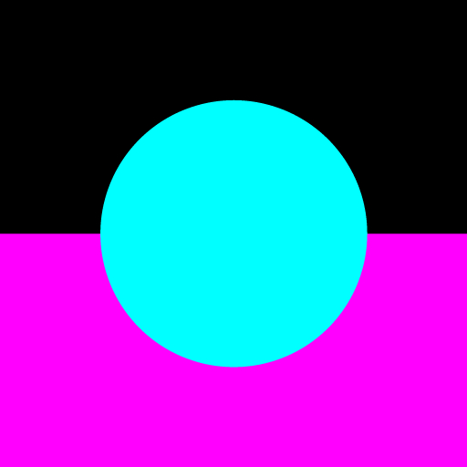
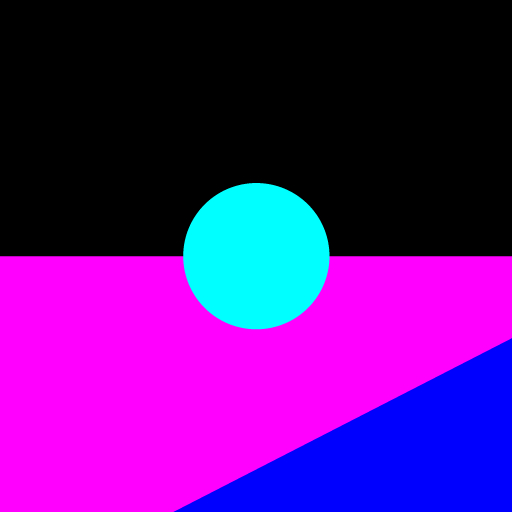
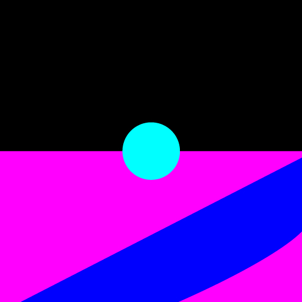
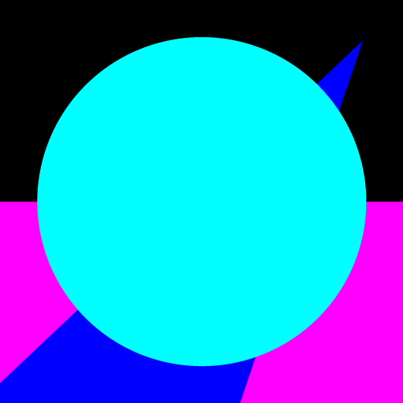
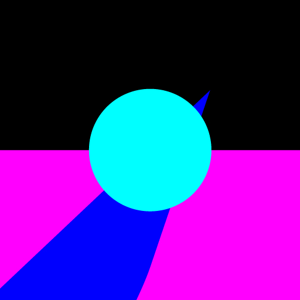
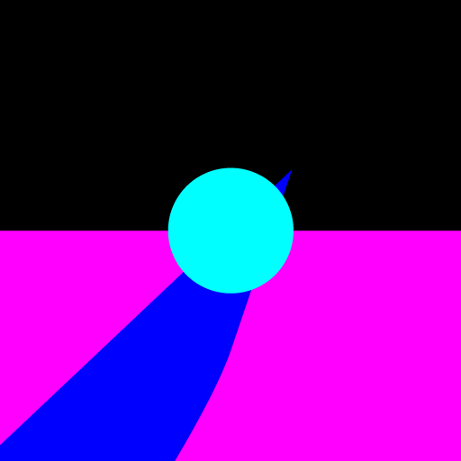

The same scene, with the camera moved to the right, but still
focused on the sphere. The aperture settings are those given for the figure
below.



Three images of the same scene, presented with three different
field-of-view settings.